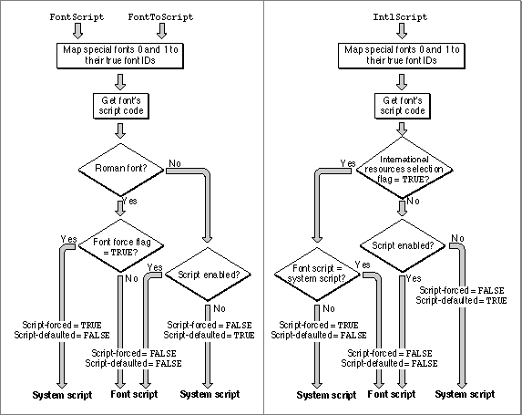
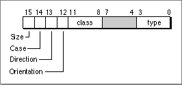

Legacy Document
Important: The information in this document is obsolete and should not be used for new development.
Important: The information in this document is obsolete and should not be used for new development.


Obtaining Information
The second principal use for the Script Manager is in obtaining script-specific information. Many of the routines described in this section are of general interest and are used by most text applications. You can use these Script Manager routines to
Most text-processing applications need script-code information and character-type information, and may need to pass specific tables from international resources to some script-aware text routines. If you format currencies, you need access to the numeric-format resource. If you use special symbols or if you format numbers, you
- determine script codes for the current script system or any other available script system, based on font information
- analyze characters in your text for size (in bytes) or other properties
- directly access the contents of a script system's international resources, to pass that information to other text-handling calls or to inspect or modify the information
need access to the untoken table and perhaps the number parts table of the tokens resource. If your needs are more specialized, you can obtain the contents of other tables and other resources.Determining Script Codes From Font Information
The script management system asssociates a script system with a sequence of text by examining the font of that text. Your application may also need the same information--to test for the presence of a particular script system, to load its resources, to pass its code as a parameter to a script-aware routine, or to execute script-specific conditional code. You may need to determine what script system is currently active for displaying text, what script system is being used to sort and format text, or what script system would be used if text of a particular font were to be displayed or formatted. The Script Manager provides three routines for that purpose:FontScript,FontToScript, andIntlScript.The
FontScriptfunction tells you which script system the font of the current graphics port belongs to. TheFontToScriptfunction tells you which (available) script system a font of any ID number belongs to. TheIntlScriptfunction tells you which script system is used by the Text Utilities to determine the number, date, time, currency, and sorting formats.The
FontToScriptfunction returns a script code for a specified font family ID, but theFontScriptandIntlScriptfunctions return the code for the current script, the presently active script system for text manipulation. Many script-aware routines in QuickDraw, Text Utilities, the Script Manager, and other parts of the Macintosh script management system need not take an explicit script code or international resource handle as a parameter; in that case they use the current script as the script system under which they are to function.The current script for text display is normally the font script. The current script for date and time formatting and string sorting is by default the system script. However, the settings of two flags--the font force flag and the international resources selection flag--can affect which script system is considered current at any one moment. Furthermore, if the mapping from font to script results in a request for a script system that is not available, the result defaults to the system script.
The next subsection lists the steps taken by
FontScript,FontToScript, andIntlScriptto determine the script codes they return, and the following subsections discuss the font force flag and the international resources selection flag in more detail.How a Script Code Is Determined
TheFontScript,FontToScript, andIntlScriptfunctions all use a font family ID to determine the script code they return. The formula they use is presented in the discussion of resource ID numbers and script codes in the appendix "International Resources" in this book. Fonts with IDs below 16384 ($4000) are all Roman; starting with 16384 each non-Roman script system has a range of 512 ($200) font IDs available.Nevertheless, you should always call the functions instead of hardcoding any formula, because it may change in the future. Furthermore, the function results are influenced by the states of the font force flag and the international resources selection flag, and by the availability of the determined script. Figure 6-1 shows the method the functions follow:
Figure 6-1 Determining script code from font family ID
- The three functions initialize two result flags, the script-forced result flag and the script-defaulted result flag, to
FALSE. These flags are Script Manager variables, accessed through theGetScriptManagerVariablefunction selectorssmForcedandsmDefault.- The three functions map the two special font designations 0 and 1, meaning the system and application fonts, to their true font family ID numbers.
FontScriptandIntlScriptcalculate the script code from the font family ID of the current font of the active port;FontToScriptcalculates the script code from the supplied font family ID. If the ID is in the range $4000 to $BFFF, it is a non-Roman font; otherwise, it is Roman.- Once the initial determination of the script code has been made, the three functions diverge:
- If the font is Roman,
FontScriptandFontToScriptexamine the font force flag, which can be accessed through theGetScriptManagerVariablefunction selectorsmFontForce. If the flag isTRUE, the two functions substitute the system script for the font script, and set the script-forced result flag toTRUE. If the font is non-Roman,FontScriptandFontToScriptignore the state of the font
force flag.- Regardless of the font type (Roman or non-Roman),
IntlScriptexamines the international resources selection flag, which can be accessed through theGetScriptManagerVariablefunction selectorsmIntlForce. If the flag isTRUEand the font script does not equal the system script,IntlScriptsubstitutes the system script for the font script and sets the script-forced result flag toTRUE.

Call
- A final check is made to be sure that the resulting script is installed and enabled. If it is not, the three functions substitute the system script for the script code previously determined, set the script-forced result flag to
FALSE, and set the script-defaulted result flag toTRUE.- The functions return the resulting script code in their function results.
FontScriptwhen you want to know which script system will be used for text layout and display. The script code returned byFontScripttells you which script system controls the functioning of such calls asCharToPixel,CharacterType,FindWordBreaks,DrawText, andDrawJustified. Typically,FontScriptreturns the script code for the font script; in most situations the font force flag isFALSE,
because applications usually expect to format and draw text according to the rules of the
font script.Call
FontToScriptwhen you want to know whether the script system for text of a particular font is available, or when you wish to manipulate text of a certain script system without setting the current font to that font's ID.
Call
- Note
- Because a user can set the value of the font force flag from the Text control panel, the result returned from the
FontToScriptorFontScriptfunction for a font whose ID number is in the Roman range can vary from call to call.
IntlScriptwhen you want to know which script system will be used for formatting dates and numbers, and for sorting strings. The script code returned byIntlScripttells you which script system controls the functioning of such calls asDateString,LongTimeString, andCompareText, when no explicit script code or resource handle is supplied to those calls. In many localized versions of sysem software,IntlScriptby default returns the script code for the system script, because the international resources selection flag is by defaultTRUE. The Finder and other parts of system software usually expect to present dates, times, and lists of files according to the rules of the system script.Because the two flags are independent of each other, two different meanings for current script can exist simultaneously. For example, your application might be sorting a set of strings by one script's rules, but displaying them by another's. If that is not appropriate, set the flags as needed before formatting or drawing. See the following discussion.
Using the Font Force Flag
You access and control the font force flag through theGetScriptManagerVariableandSetScriptManagerVariablefunctions, with the selectorsmfontForce. This flag directly affects the results of theFontScriptandFontToScriptfunctions, and indirectly affects the operation of script-aware text measuring and drawing routines.At startup, the Script Manager sets the font force flag to the value specified in the system script's international configuration (
'itlc') resource. Typically, that value isFALSE.When the font force flag is set to
TRUEand the system script is non-Roman, the script management system interprets font family ID numbers in the range of the Roman script system ($0002 to $3FFF) as belonging to the system script instead. Character codes representing non-Roman characters in the system script are drawn using the system font instead of in the specified Roman font. This feature exists to allow users to enter and read non-Roman text in those few applications that have hardcoded font numbers.For example, an application may hardcode Geneva as its font; it may force the
txFontfield of its graphics ports to always have a value of 3. (Note that this is a violation of good programming practice.) If the application is running on a system with Hebrew as the system script, it would normally be impossible to write properly in Hebrew because the hardcoded font ID would require the font script to be Roman. However, if the font force flag is set toTRUE, the script management system notes that the current font has an ID number in the Roman range and draws glyphs from the Hebrew system font for any character codes that represent valid Hebrew characters.Thus to enter or read non-Roman text in these applications, the user can set the font force flag to
TRUEfrom the Text control panel. Setting the font force flag is only partially effective, because it cannot give users full control over fonts. The user cannot choose, for example, which font belonging to the system script is to be substituted for Roman.The font force flag has no effect on non-Roman fonts and has no effect if the system script is Roman. It affects only Roman fonts when the system script is non-Roman.
You can determine the status of font forcing by inspecting the script-forced result flag and the script-defaulted result flag immediately after calling
FontScriptorFontToScript; see Figure 6-1.Although the font force flag exists primarily to accommodate restrictions in certain existing applications, it is a user-changeable setting that your application should be aware of and accommodate. For example:
- If you are writing any application in which the user has control over fonts, you should always set the font force flag to
FALSE. There is no need to force fonts if the user can choose them.- If the user sets the font force flag to
TRUE, you will get the system script when you callFontScriptorFontToScriptfor fonts in the Roman range, even if your application allows mixed text. To preserve Roman text, you can change the setting of the font force flag before callingFontScriptorFontToScript, or before calling any other script-aware text routine. If you do that, be sure to save the previous value and restore it when your application exits or becomes inactive.
Using the International Resources Selection Flag
You access and control the international resources selection flag through theGetScriptManagerVariableandSetScriptManagerVariablefunctions, with the selectorsmIntlForce. This flag directly affects the results of theIntlScriptfunction, and indirectly affects the operation of theGetIntlResourcefunction and the script-aware Text Utilities sorting and formatting routines.At startup, the Script Manager sets the international resources selection flag to the value specified in the system script's international configuration (
'itlc') resource. Typically, that value isTRUE.The international resources selection flag affects the results of the
GetIntlResourcefunction (see page 6-90).GetIntlResourcereturns a handle to certain international resources, and the state of the international resources selection flag controls whether it is the system script or the font script whose international resources are loaded. When the flag is set toTRUE,GetIntlResourcefetches the resources for the system script. When the flag is set toFALSE,GetIntlResourceuses the current font in the active port to determine the script system whose resources will be fetched.You can use the international resources selection flag to make sure that date formats, sorting, and so forth reflect the appropriate script in your application. Whenever you change the setting of the international resources selection flag, be sure to save the previous value and restore it when your application exits or becomes inactive.
Analyzing Characters
The Script Manager provides routines that let you analyze the size and type of individual characters. For example, with script systems that use 2-byte characters,
you may need to determine what part of a character a single byte represents. In either 1-byte or 2-byte script systems, you may need to know whether a particular character is a letter or a punctuation mark, whether or not it is uppercase, or whether it is part of a subscript (Roman within Cyrillic, Hiragana within Japanese, and so on).Searching Text With Mixed Character Sizes
When searching for a single 1-byte character in text that may contain 2-byte characters, your application must not mistake part of a 2-byte character for the character you are seeking. TheCharacterByteTypeandFillParseTablefunctions tell you whether a given character is 1-byte or whether it is the first or second byte of a 2-byte character.These functions use the fact that, in a 2-byte script system, only a restricted set of values within the high-ASCII range are used as the first bytes of 2-byte characters, and those values are never used for 1-byte characters in that script system. All other byte values represent single-byte characters, control characters, or the second bytes of 2-byte characters. The ranges reserved for initial bytes of 2-byte characters vary from script system to script system, but every font has a table that gives that information, and
CharacterByteTypeandFillParseTableuse those tables to perform their calculations. For an illustration of this concept, see the discussion of character encoding in the chapter "Introduction to Text on the Macintosh" in this book.Listing 6-6 shows a search procedure that accounts for 2-byte characters. This routine uses the Text Utilities
Mungerfunction to find a match to a key string. BecauseMungermight find a match beginning at the second byte of a 2-byte character, the routine checks for this case (using theCharacterByteTypefunction) and continues searching if
it occurs.The sample assumes two application global variables:
gMainTextHandle, which is a handle to the application's text buffer, andgNewLocation, a long-integer offset into the buffer at which to start searching. The parameterskeyPtrandkeySizespecify the string to be matched in the text buffer;scriptNumis an explicit script code. On return, the routine updatesgNewLocationto point to the location at which the search string was found, or sets it to -1 if no match was found.Listing 6-6 Handling 2-byte characters in a search procedure
PROCEDURE MySearch (keyPtr: Ptr; keySize: LongInt; scriptNum: Integer); VAR byteType: Integer; BEGIN HLock(gMainTextHandle); {CharacterByteType can move memory} REPEAT BEGIN gNewLocation := Munger(gMainTextHandle, gNewLocation, keyPtr, keySize, NIL, 0); {if we matched second byte of } { 2-byte char in text, continue} IF (gNewLocation >= 0) AND (scriptNum > 0) THEN byteType := CharacterByteType(gMainTextHandle^, gNewLocation, scriptNum) ELSE byteType := smSingleByte; END UNTIL byteType <> smLastByte; HUnlock(gMainTextHandle); IF (gNewLocation >= 0) AND {range-check, update global} (gNewLocation + keySize > GetHandleSize(gMainTextHandle)) THEN gNewLocation := -1; END;TheFillParseTablefunction is similar toCharacterByteType, in that it helps you find 2-byte characters. However, you don't sendFillParseTablethe character code to be analyzed. Instead,FillParseTablefills in an entire 256-byte table of information for you, showing every byte value that is the first byte of a 2-byte character for the current font. You can use the table filled out byFillParseTableto find 2-byte characters in a large body of text much more rapidly than you could by callingCharacterByteTypefor each byte value in the text.Getting Character-Type Information
You may want to know more about a byte than whether it is part of a 2-byte character. If you are simply searching for sequences of Roman text in a buffer, or if you wish to divide a run of Japanese into Kanji, Katakana, Hiragana, and Romaji components, you can use theFindScriptRunfunction described in the chapter "Text Utilities" in this book. But if you have other reasons to isolate specific types of characters, you can useCharacterType.The
CharacterTypefunction is similar toCharacterByteType, in that it tells you what kind of character occurs at a given offset in a text buffer. But the kind of information it returns is different.CharacterTypetells you what the character's line direction is, whether it's uppercase, whether it belongs to a subscript within its script, whether it's a 2-byte character, and what the character's specific type and class are--letter or punctuation, low-ASCII or high-ASCII Roman letter, Katakana or Hiragana, Jamo or Hangul, and so on.When you call the
CharacterTypefunction, you pass it a byte offset; it returns a
value that is an integer bit field giving information about the character at that offset. See Figure 6-2. The paragraphs following the figure describe the fields.Figure 6-2 Fields in the
CharacterTypereturn value Bits 0-3 of the
CharacterTypefunction result describe the character type of the character in question.
Bits 8-11 of the
- The Roman script system recognizes three basic character types, defined by the following constants:
- Additional character-type constants are provided for Japanese Katakana and Hiragana; the ideographic subscripts such as Hanzi, Kanji, and Hanja; 2-byte Cyrillic and Greek in 2-byte systems; bidirectional script systems such as Arabic and Hebrew; and Korean Hangul and Jamo subscripts:
CharacterTypefunction result describe the character class of the character in question. Character classes can be considered as subtypes of character types; a given character type can have several classes that belong to it.
Bits 12-15 of the
- If the character type is
smCharPunct, the following character classes are defined that include punctuation for both 1-byte and 2-byte script systems:- In the Korean script system, if the character type is
smCharJamo, the following character classes are defined. They determine whether a given byte contains a simple or complex consonant or a simple or complex vowel:The Jamo and Hangul subscripts of Korean are discussed briefly along with input methods in the chapter "Introduction to Text on the Macintosh" in this book.
- In the Japanese script system, if the character type is
smCharKatakanaorsmCharHiragana, the following character classes are defined:A small Kana character is a special form of Kana used to modify the pronunciation of a previous (full-sized) Kana character. Dakuten and han-dakuten are pronunciation marks that soften consonant sounds in Kana.
- In 2-byte script systems, if the character type is
smCharIdeographic, the following character classes are defined:
Character class Hex. value Explanation smIdeographicLevel1 $0000 Level 1 characters smIdeographicLevel2 $0100 Level 2 characters smIdeographicUser $0200 User characters The characters specified by the
smIdeographicLevel1constant are part of the
level 1 Han character set specified by Japanese, Chinese, and Korean government standards. Approximately 90 percent of normal text consists of characters from the level 1 set.The characters specified by the smIdeographicLevel2 constant are part of the
level 2 Han character set, which includes obscure characters. The level 1 and level 2 character sets combined contain 98 percent of the character set used in the Kanji subscript.The characters specified by smIdeographicUser represent custom characters created by the user.
CharacterTypefunction result are the character modifiers of the character in question. One bit describes each modifier.
You can describe individual characters with combinations of these constants. For example, if the byte being examined by
- Bit 12 specifies the orientation of the character: whether it is intended for horizontal or vertical writing.
- Bit 13 specifies the direction of the character: whether its line direction is left-to-right or right-to-left.
Character direction Hex. value Explanation smCharLeft $0000 Character with left-to-right line direction smCharRight $2000 Character with right-to-left line direction - Bit 14 specifies the case of the character: whether it is lowercase or uppercase.
Character case Hex. value Explanation smCharLower $0000 Lowercase character smCharUpper $4000 Uppercase character - Bit 15 specifies the size of the character: whether it is 1 or 2 bytes long.
Character size Hex. value Explanation smChar1byte $0000 1-byte character smChar2byte $8000 2-byte character
CharacterTypeis a 1-byte English uppercase "A", then the value of the result could be expressed assmChar1Byte+smCharUpper+smCharLeft+smCharASCII.CharacterTypeindicates blank characters by a typesmCharPunctand a classsmCharBlank.Some values are meaningful only in certain subscripts or script systems. The value
smCharUpperis meaningless in a subscript that has no uppercase characters, for example; the value smIdeographicLevel is meaningless in 1-byte script systems.You can use
CharacterTypefor a variety of purposes--to validate input in numeric fields, to filter non-phonetic characters in an input method, or to search for punctuation, uppercase letters, and symbols. If you are breaking lines of text and are not using the Text UtilitiesStyledLineBreakfunction, you can useCharacterTypeto locate and skip whitespace characters at the ends of lines; see the description of text drawing in the chapter "QuickDraw Text" in this book.The
CharacterTypefunction is described further on page 6-85.Directly Accessing International Resources
This section shows how you can directly access the international resources of a script system. Such direct access can help you be more efficient in creating bilingual applications, formatting numbers in different scripts, accessing character information, and using tokens. Several script-aware Text Utilities calls can take a handle to an international resource as an input parameter; you can use the calls in this section to obtain those handles.Your application can examine the international resources that determine numeric formats, date formats, string sorting, conversion to tokens, and character encoding or rendering by making the calls described here. You can also retrieve individual tables from some of the resources.
This access also helps you to provide your own versions or regional variations of certain international resources. See "Replacing a Script System's Default International Resources" beginning on page 6-48 for more information.
The calls you make to access the international resources are
- Note
- Although you can access the international resources independently through the Resource Manager function
GetResourceand related calls, you can be sure to get the preferred resource of the current script system by using the calls described here.ClearIntlResourceCache,GetIntlResource, andGetIntlResourceTable. With them, you have access to the contents of a script system's numeric-format ('itl0'), long-date-format ('itl1'), string-manipulation ('itl2'), tokens ('itl4'), and encoding/rendering ('itl5') resources.To access one of these resources for the current script, follow these steps:
For an example of using
- Make sure the current script is the script system containing the international resource you want to access. See "Determining Script Codes From Font Information" on page 6-21. You may need to verify the settings of the font script, the system script, and the international resources selection flag. See "Using the International Resources Selection Flag" on page 6-25.
- If you need access to any version of the current script's string-manipulation or tokens resources other than its default version, call
ClearIntlResourceCachefirst. See "Replacing a Script System's Default International Resources" on page 6-48.- Call
GetIntlResource, specifying the type of resource you need.GetIntlResourcereturns a handle to the resource.
GetIntlResourceto extract information from an international resource, see the next section, "Using Currency, Number, and Date Formats."To access a specific table within a string-manipulation or tokens resource, follow
these steps:
For more information about these tables, see the following sections: "Using Number Parts," "Retrieving Text From Tokens," "Using Word-Break Tables," and "Using Whitespace Information."
- If you don't already have it, determine the script code of the script system containing the international resource you want to access. See "Determining Script Codes From Font Information" on page 6-21.
- If you need access to any other than the script's default version of that resource, call
ClearIntlResourceCachefirst. See "Replacing a Script System's Default International Resources" on page 6-48.- Call
GetIntlResourceTableto get the specified table within the specified resource belonging to the specified script system. Depending on the resource, you can get its number-parts, untoken, word-selection, line-break, or whitespace table.
- IMPORTANT
- Any time you replace the default international resources for a script system, whether or not you subsequently call
GetIntlResourceorGetIntlResourceTable, you need to callClearIntlResourceCache, to make sure that the replacements are used by all script-aware calls. See "Replacing a Script System's Default International Resources" beginning on page 6-48.
Using Currency, Number, and Date Formats
In general, you should use the Text Utilities routines for date, time, and number formatting. See the chapter "Text Utilities" in this book. If, however, you need to directly access fields in the numeric-format ('itl0') and long-date-format ('itl1') resources to find the characters, separators, strings, and orders for formatting numbers, dates, and times, you can do so withGetIntlResource.Listing 6-7 shows how to determine the decimal, thousands, and list separators for number formatting in the current script. To access the numeric-format resource, the routine specifies a resource selector of 0 (for
'itl0') in the parametertheIDof theGetIntlResourcefunction. It then extracts the values it wants from the decimalPt,thousSep, andlistSepfields.Listing 6-7 Determining the number separators for the current script
PROCEDURE MyGetNumberSeparators (VAR myDecimal:Char; VAR myThousands:Char; VAR myListSep:Char); VAR myHandle: Intl0Hndl; {make sure the desired script is set } { before calling this routine} BEGIN myHandle := Intl0Hndl(GetIntlResource(0));{Get 'itl0' resource} myDecimal := myHandle^^.decimalPt; {for example, 1.234} myThousands := myHandle^^.thousSep; {for example, 1,234,567} myListSep := myHandle^^.listSep; {for example, 1;2;3} END;
- IMPORTANT
- Do not assume that the components of dates and times are always ordered in a left-to-right direction when displayed. If you are drawing individual time components, be careful not to simply draw them from left to right in all cases. For instance, the AM/PM characters in an English time string are on the right, whereas in an Arabic time string the equivalent characters may be on the left or right, depending on the primary line direction--even though in both cases these characters are at the end of the time string in memory.
Using Number Parts
You can access information on how separators and other parts of formatted numbers are represented in a particular script system by examining the number parts table in the script's tokens ('itl4') resource. Unlike the numeric-format resource, the number parts table supports 2-byte characters; it also contains more information, especially for complicated number formats such as scientific notation.Your most common reason for obtaining the number parts table may be to pass it as a parameter to the Text Utilities functions
StringToFormatRec,FormatRecToString,StringToExtended, andExtendedToString. But you can also examine its contents. Listing 6-8 shows how to call theGetIntlResourceTableprocedure, with a table selector of smNumberPartsTable, to obtain the number parts table associated with a given script. The routine obtains the character associated with the number part specified bythePartand saves it as a wide character, which is a character of either 1 or 2 bytes. (See the discussion of the tokens resource in the appendix "International Resources" for a definition of theWideChardata type.) To specify the system script, the parametertheScriptwould have the valuesmSystemScript. The parameterthePartcan have such values astokDecPointandtokThousands. For a complete list of number-parts constants, see the description of the tokens resource in the appendix "International Resources" in this book.Listing 6-8 Getting number parts from a script system's number parts table
PROCEDURE MyMapNumPartToWideChar(theScript: ScriptCode; thePart: Integer; VAR theWChar: WideChar); VAR itlHandle: Handle; numpartsOffset: Longint; numpartsLength: LongInt; numpartsPtr: NumberPartsPtr; BEGIN GetIntlResourceTable(theScript, smNumberPartsTable, itlHandle, numpartsOffset, numpartsLength); IF itlHandle = NIL THEN {handle errors, } theWChar.b := 0 { return null WideChar} ELSE BEGIN {make numpartsPtr point to } { beginning of number parts table} numpartsPtr := NumberPartsPtr(LongInt(itlHandle^) + numpartsOffset); IF thePart > tokMaxSymbols THEN {invalid number part-- } { handle error, } theWChar.b := 0 { return null WideChar} ELSE BEGIN theWChar := numpartsPtr^.data[thePart]; END; END; END;Retrieving Text From Tokens
Tokens are abstract entities that stand for classes of text items such as alphanumeric strings, various symbols, and quoted literals. The Script ManagerIntlTokenizefunction converts programming-language text into script-independent tokens useful to compilers or interpreters. See "Tokenization" on page 6-38. The untoken table in a script system's tokens ('itl4') resource has the opposite purpose; it helps you convert script-independent tokens into the text of a given script system.The untoken table lists the characters associated with each fixed (invariant) token defined by that script. (An invariant token is one that, like
tokenColon, represents a unique symbol. Other types of tokens, liketokenAlpha, represent an arbitrary sequence of characters.) If you need to find out, for example, how a given script system represents the "less than or equal to" symbol (is it the 1-byte character "\xE6", a 2-byte encoding of the character "\xE6", the 2-byte, 2-character sequence "<=", or something else altogether?), you can look up the values oftokenLessEqual1andtokenLessEqual2in that script's untoken table.The untoken table is most useful for obtaining script-specific forms for individual common symbols, such as the ellipsis or center dot. If you truncate strings with the ellipsis character (...) or use the center dot () such as AppleShare does for echoing passwords, don't hardcode their character codes; they may not be valid in some script systems. Instead, specify
tokenEllipsisortokenCenterDot, and use the untoken table of the current script system to obtain the proper text for those tokens.
You access the untoken table by calling the
- Note
- If a script system has no defined character or string that corresponds to a particular token, the untoken table contains either a null string or the string "??" for that token.
GetIntlResourceTableprocedure with a table selector ofsmNumberPartsTable. Listing 6-9 provides an example of how to access the untoken table in the tokens resource. This code sample extracts the canonical string associated with a token. It sets the parametertheStringto the string that corresponds to the tokentheToken. (Usually, this string is 4 bytes or less.) To specify the system script, the parametertheScriptwould have the valuesmSystemScript. The parametertheTokencan have such values astokenNoBreakSpace,tokenEllipsis, andtokenCenterDot. For a complete list of defined constants for tokens, see "Token Codes" beginning on page 6-58.Listing 6-9 Getting a token string from the untoken table
PROCEDURE MyMapTokenToString(theScript: ScriptCode; theToken: Integer; VAR theString: Str255); VAR itlHandle: Handle; untokenOffset: LongInt; untokenLength: LongInt; untokenPtr: UntokenTablePtr; untokenStringPtr: StringPtr; BEGIN GetIntlResourceTable(theScript, smUnTokenTable, itlHandle, untokenOffset, untokenLength); IF itlHandle = NIL THEN {handle errors, return null string} theString := '' ELSE BEGIN {make untokenPtr point to the } { beginning of the untoken table} untokenPtr := UntokenTablePtr(LongInt(itlHandle^) + untokenOffset); IF theToken > untokenPtr^.lastToken THEN {this token is } { not in table-- } theString := '' { return null string} ELSE BEGIN {index[theToken] is the offset } { of the desired string from the } { beginning of the untoken table} untokenStringPtr := StringPtr(LongInt(untokenPtr) + untokenPtr^.index[theToken]); theString := untokenStringPtr^; END; END; END;Even though using the untoken table is conceptually the converse of calling theIntlTokenizefunction, their purposes are different.IntlTokenizeis used as a first step toward compiling or interpreting programming-language source text, and its results are rarely returned or reconverted to source text. The untoken table is most commonly used to supply localized text for individual common tokens.Using Word-Break Tables
If you use the Text UtilitiesFindWordBreaksprocedure to determine the boundaries of a word, you normally do not need to pass it an explicit pointer to a word-break table. However, if you want to use a custom word-break table you can passFindWordBreaksa pointer to that table. Word-break tables are in a script system's string-manipulation ('itl2') resource; you can gain access to them by calling theGetIntlResourceTableprocedure with a table selector ofsmWordSelectTableorsmWordWrapTable.There are two possible table selectors because a script system may have different word breaks for word selection than it does for line breaking. If you are using
FindWordBreaksto select an individual word, usesmWordSelectTablewhen you callGetIntlResourceTableto obtain the word-break table. If you are usingFindWordBreaksto find line breaks, usesmWordWrapTablewhen you callGetIntlResourceTable.Using Whitespace Information
Most applications that need whitespace information, such as when eliminating extra spaces in text or searching for non-space characters, can get it by calling theCharacterTypefunction. However, if your application needs a listing of all valid whitespace characters in a script system, you can callGetIntlResourceTablewith a table selector ofsmWhiteSpaceList.GetIntlResourceTablereturns the whitespace table from the script system's tokens resource.